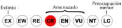

Prostherapis dunni
| Sapito Niñera de Dunn | |
|---|---|
 | |
| Riesgo de extinción | |
|  En peligro crítico (UICN) | |
| Clasificación científica | |
| Reino: | Animalia |
| Filo: | Chordata |
| Clase: | Amphibia |
| Orden: | Anura |
| Familia: | Aromobatidae |
| Género: | Prostherapis |
| Especie: | Prostherapis dunni |
| Nombre binomial | |
|
Prostherapis dunni Rivero, 1961 | |
| Distribución | |
 Mapa de distribución de Prostherapis dunni | |
Contenido
Información de Evaluación
- Categoría y Criterio Regional: En Peligro Crítico A2ace
- Fecha de Evaluación Regional: 2015
- Evaluadores: Jesús Morales-Campos y Ariany García-Rawlins
- Categoría y Criterio Global: En Peligro Crítico A2ace
Justificación
Evaluaciones Previas
1999: No Evaluado (NE)
2008: Datos Insuficientes (DD)
Información General
Nombres comunes
Sapito niñera de Dunn, Dunn's rocket frog.
Notas taxonómicas
Originalmente descrito dentro del Prostherapis (Rivero, J. A. 1961), fue transferido por Edwards (1971) al género Colostethus. Varios autores consideraron que esta especie estaba relacionada con las del grupo de Colostethus collaris (= Mannophryne) (Rivero, J. A. 1978, Myers et al. 1991). La Marca (1985) la calificó como parte del grupo de C. alboguttatus, pero no la asignó al Nephelobates (= Aromobates), el cual reunía a todas las especies originalmente adjudicadas al grupo de C. alboguttatus (La Marca 1994a). Luego, La Marca (2004) afirma que no guarda relación estrecha con Mannophryne ni con Nephelobates, y que sus relaciones filogenéticas con otros dendrobátidos son inciertas. Grant et al. (2006) adjudican la especie a la subfamilia Aromobatinae (junto con Aromobates y Mannophryne) y destacan que esta guarda estrecha relación con Aromobates; no obstante, debido a la falta de evidencia deciden reasignarla provisionalmente al Prostherapis en condición de incertae sedis (incapacidad de ubicar un taxón dentro de una clasificación).
Sinónimos
Colostethus dunni
Descripción
Protherapis dunni es una rana terrestre de hábitos diurnos y de talla reducida (machos hasta de 20 mm y hembras que apenas consiguen los 25 mm de longitud hocico-cloaca). Hocico subacuminado en vista dorsal, de redondeado a truncado de perfil. Canthus rostralis muy poco definido y región loreal suavemente cóncava. Tímpano pequeño (un tercio del diámetro del ojo) y visible solo en su parte inferior. Dientes largos, en forma de colmillos. La textura de su piel dorsal y ventral es lisa. Primer dedo manual más corto que el segundo, y los otros con rebordes laterales; machos sin parches nupciales en los dedos mientras que los dígitos pediales son extensivamente palmeados. Dorso de color marrón oscuro con manchitas claras dispersas (blanquecinas o amarillentas), o con manchas claras mediodorsales grandes, ocasionalmente poco conspicuas; sin bandas dorsolaterales; banda clara lateral oblicua blanquecina corta; garganta amarillenta y superficie ventral de los miembros posteriores del mismo color; vientre blanco (La Marca 2004c).
Distribución
Endémica de la vertiente sur del tramo central de la Cordillera de la Costa en Venezuela. Conocida solo en la localidad típica (Los Venados, aproximadamente a 1520 m de altitud) en los alrededores de Caracas. Una segunda localidad, también junto a la ciudad de Caracas (quebrada Caurimare) ha sido referida pero no confirmada (Solano 1968, Barrio 1998, La Marca 2004c).
- Sistema: Terrestre
- Bioregión:
- Intervalo altitudinal (m): 1520
- Endémica: Sí
Situación
A pesar de que hace cinco décadas fue considerada como una especie común de los alrededores de Caracas (Solano 1968), no ha vuelto a ser documentada desde entonces. Varias búsquedas efectuadas a comienzos de los noventa y en 2004 resultaron infructuosas (La Marca 2004c). Se presume que experimentó una drástica declinación, similar a la sufrida por el sapito rayado Atelopus cruciger en la Cordillera de la Costa, y cuyas poblaciones simpátridas con Prostherapis dunni desaparecieron (Manzanilla y La Marca 2004b). Con base en la situación antes expuesta La Marca (2004) sugirió clasificarla como En Peligro, mientras que La Marca et al. (2006) la categorizan como En Peligro Crítico en la lista roja de la Unión Internacional para la Conservación de la Naturaleza.
- EOO (km2): Temporalmente sin información
- AOO (km2): Temporalmente sin información
- Tendencia Poblacional: Decreciendo
Amenazas
La pérdida de su hábitat (en extensión y calidad) representa la principal amenaza para este sapito. La localidad tipo se ubica en el borde norte de la ciudad de Caracas, de manera que está expuesta a la degradación por turismo, incendios forestales, polución y urbanismo, entre otras. La quitridiomicosis y otras enfermedades emergentes también constituyen una amenaza, debido a la facilidad de acceso de turistas a su hábitat. Se presume que la quitridiomicosis podría haber sido la causante de su declinación poblacional (La Marca et al. 2006).
Conservación
No existen medidas de conservación específicamente dirigidas a Prostherapis dunni. Su extensión de ocurrencia conocida está comprendida dentro de los límites del parque nacional Waraira Repano. Urge el desarrollo de estudios en los que se indague sobre las causas de su declinación y que evalúen el estatus actual de sus poblaciones, tanto en la localidad típica como en otras cercanas donde potencialmente pueda estar presente.
Autorías
Autores originales
Fernando J. M. Rojas-Runjaic y Josefa Celsa Señaris
Colaboradores
Ilustrador
Referencias
- Barrio, C. L. (1998). Sistemática y biogeografía de los anfibios (Amphibia) de Venezuela. Acta Biológica Venezuélica 18(2): 1-93.
- La Marca, E. (1994a). Descripción de un género nuevo de ranas (Amphibia: Dendrobatidae) de la Cordillera de Mérida, Venezuela. Anuario de Investigación 1991, Universidad de Los Andes, Instituto de Geografía y Conservación. Mérida: 39-41.
- La Marca, E. (2004c). Systematic status of an enigmatic and possibly endangered dendrobatid frog (Colostethus dunni) from the valley of Caracas, northern Venezuela. Herpetotropicos 1: 19-28.
- La Marca, E., Manzanilla, J. y Señaris, J. C. (2006). Prostherapis dunni. The IUCN Red List of Threatened Species. Version 2014.2. Disponible en www.iucnredlist.org, consultada el 01 de agosto de 2014.
- Manzanilla, J. y La Marca, E. (2004b). Population status of the Rancho Grande Harlequin Frog (Atelopus cruciger) Lichtenstein & Martens, 1856, a proposed critically endangered species from the Venezuelan Coastal Range. Memoria de la Fundación La Salle de Ciencias Naturales 62(157): 5-29.
- Myers, C. W., Paolillo O, A. y Daly, J. W. (1991). Discovery of a defensively malodorous and nocturnal frog in the family Dendrobatidae: phylogenetic significance of a new genus and species from the Venezuelan Andes. American Museum Novitates 3002: 1-33.
- Rivero, J. A. (1961). Salientia of Venezuela. Bulletin of the Museum of Comparative Zoology 126(1): 1-207.
- Rivero, J. A. (1978). Notas sobre los anfibios de Venezuela III. Nuevos Colostethus de los Andes Venezolanos. Memoria de la Sociedad de Ciencias Naturales La Salle 38(109): 95-111.
- Rodríguez, J. P. y Rojas-Suárez, F. (1999). Libro Rojo de la Fauna Venezolana, segunda edición. PROVITA, Fundación Polar. Caracas. 444 pp.
- Rodríguez, J. P. y Rojas-Suárez, F. (Eds.) (2008). Libro Rojo de la Fauna Venezolana, tercera edición. Provita y Shell Venezuela, S. A. Caracas, Venezuela. 364 pp.
- Rojas-Runjaic, F. J. M. y Señaris, J. C. (2015). Sapito niñera de Dunn, Prostherapis dunni. En: J.P. Rodríguez, A. García-Rawlins y F. Rojas-Suárez (eds.) Libro Rojo de la Fauna Venezolana. Cuarta edición. Provita y Fundación Empresas Polar, Caracas, Venezuela. Recuperado de: animalesamenazados.provita.org.ve/content/sapito-ninera-de-dunn
- Solano, H. (1968). Anfibios comunes del Valle de Caracas. Estudio de Caracas. Ecología Vegetal y Fauna. Universidad Central de Venezuela. Ediciones de la Biblioteca. Caracas. 1: 259-294.